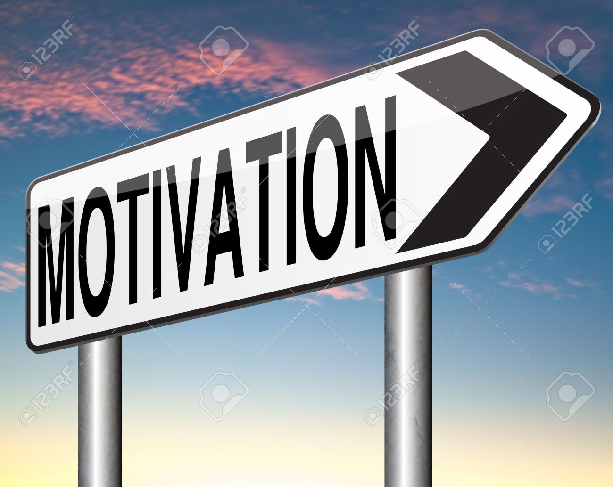

L'auto motivation

L'auto motivation c’est une compétence très importante et une composante essentielle de l’intelligence émotionnelle, elle vous permet d’atteindre vos objectifs et d’aller de l’avant.
Si vous pensez que vous ne pouvez pas réaliser quelque chose, que vous ne savez pas par où commencer ou que vous êtes pris de procrastination, l’automotivation est la chose qui vous motive à continuer. Cette idée est compliquée car elle est liée à un degré de certitude et de confiance en soi.
Voyons donc comment se motiver tout seul !
les differentes solutions de l'auto motivation
C’est la fameuse question que pose l’auteur et conférencier Simon Sinek. Question simple, mais hautement importante. En me posant la question souvent et surtout avant tout début de projet, je me permets une pause, de prendre un pas de recul afin de réellement comprendre les objectifs de ce que je fais ou m’apprête à faire.
En ayant des objectifs clairs et surtout réalistes (ne craignez pas qu’ils soient difficilement atteignables), le chemin pour m’y rendre devient beaucoup moins encombré. Une fois les objectifs définis, je développe un plan de match par étapes afin de maximiser mes chances de réussites. Ce qui peut alors paraître comme une tâche colossale devient plusieurs petites tâches ayant chacune leurs propres sous-objectifs, me permettant de voir des résultats concrets tout au long du parcours et non uniquement à la fin.
Dire non beaucoup plus souvent
Dire oui à tout sous peur de passer à côté de «l’occasion du siècle» est un piège classique. Peut-être est-ce en raison du conditionnement quotidien dû aux heures passées sur nos différentes plateformes sociales, mais le FOMO, ou «fear of missing out» existe aussi en affaires.
Je me souviens de mes débuts, où je disais oui pour toute occasion, à tout le monde, tout le temps. Bien que cette stratégie m’a permis de me faire connaître, elle m’a aussi fait courir comme une poule pas de tête, m’empêchant de travailler sur ce qui créait vraiment de la valeur.
En tant qu’entrepreneur ou personne d’affaires, on est bombardé de demandes de toutes parts. Après des années à dire oui sans trop réfléchir, j’ai décidé d’arrêter de vivre selon les demandes et urgences des autres et de prioriser mes projets ainsi que mon horaire.
Dire non, c’est prendre position, c’est marquer son territoire, c’est faire le choix de se choisir. Bien entendu, on ne dit pas non aveuglément, mais avec l’expérience, on arrive assez facilement à filtrer les demandes qui en valent la peine et celles qui inondent notre quotidien, nous faisant par le fait même perdre temps et motivation.